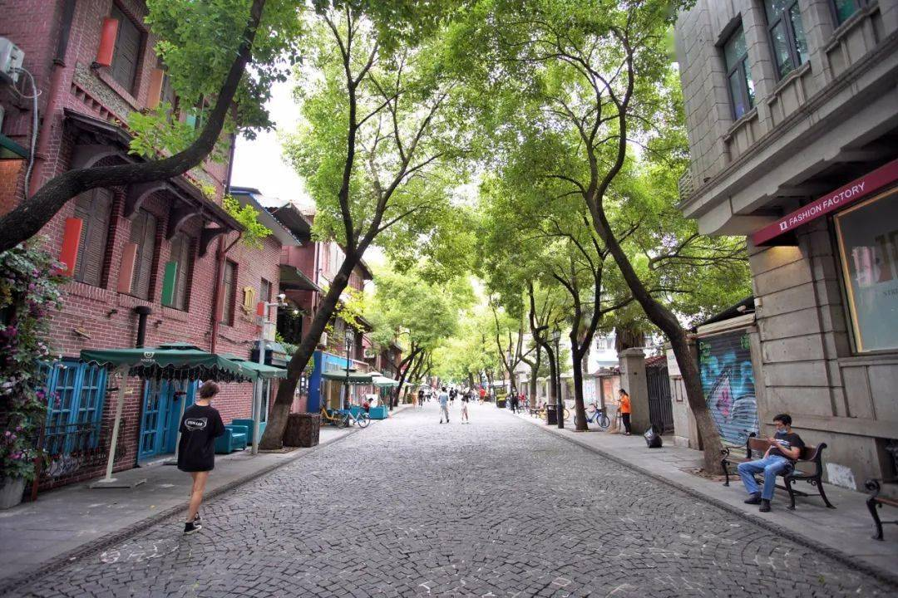

E·01
三鲜豆皮 · 金黄焦香
三鲜豆皮
蛋皮裹着糯米与鲜肉、鲜菇、鲜笋，切块煎到金黄焦香，外脆内软，是过早的另一道招牌。
武汉人把吃早餐叫作“过早”。清晨的街头，纸碗、竹筷和腾腾热气凑在一起， 一碗热干面拌开芝麻酱，配着豆皮、汤包和豆腐脑，是这座城市最接地气的开场。
 热干面 · 芝麻酱拌面
热干面 · 芝麻酱拌面
蛋皮裹着糯米与鲜肉、鲜菇、鲜笋，切块煎到金黄焦香，外脆内软，是过早的另一道招牌。
纸碗拿在手里，站着或边走边吃，是武汉街头常见的清晨景象，烟火气很足。

巷口 · 早餐小店不少早餐店藏在老巷与社区街边，挨着老建筑和树荫，吃完顺路再逛一段街。
米浆下锅炸成外圈酥脆、中间薄脆的面窝，葱香咸口，是武汉街头另一样经典过早。
在武汉，早餐不只是填饱肚子，更像一种日常仪式。店铺一早开张， 街坊和路人排着队，端着碗站在路边吃完，再开始一天的事。
除了热干面，豆皮、汤包、面窝、糊汤粉等都是常见的过早选择， 口味偏浓郁扎实，适合边走边尝。
本站是一次网页设计课程作业，围绕“武汉城市漫步”这一单一主题展开。
index.html：站点封面与五个漫步方向入口；riverside.html 江滩信号、streets.html 老街坐标、landmarks.html 地标定位、lakeside.html 湖景数据、food.html 过早索引，共五个内页；css/style.css，实景配图位于 assets/ 目录；